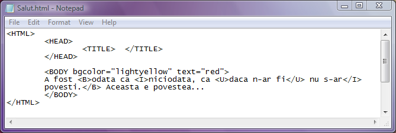
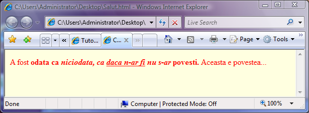
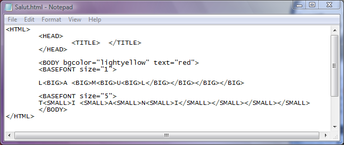
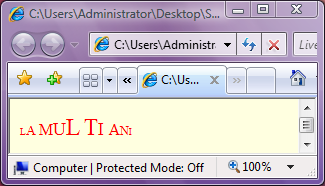

Combinarea modului de scriere prin imbricarea etichetelor
In cele ce urmeaza sunt ilustrate cateva exemple de utilizare a mai multor optiuni
de formatare a fonturilo, combinate, cu respectarea regulii de imbricare a etichetelor:
Daca in interiorul unei etichete "parinte" a fost deschisa o alta, atunci aceasta
trebuie inchisa inainte de inchiderea etichetei parinte.
Exemplul1.


Exemplul2


Inapoi la Formatare fonturi...